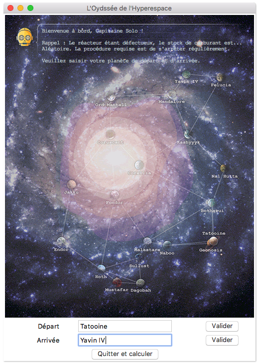
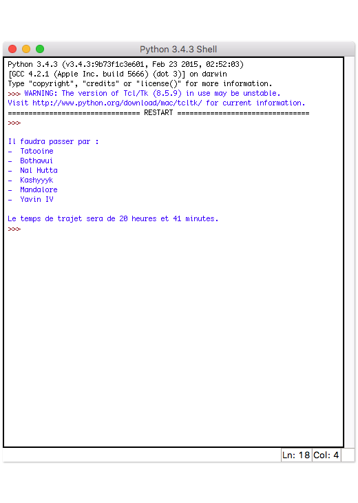

Projets Étudiants
L'Odyssé de l'Hyperespace (Mars-mai 2016)
Objectif : Développer un programme Python permettant de résoudre le problème du voyageur de commerce, grâce à l'algorithme de Dijkstra. Pour nous approprier ce problème du plus court chemin, nous avons situé le contexte il y a bien longtemps, dans une galaxie lointaine, très lointaine....
Contexte : Projet final de la spécialité ISN, travail en binôme, lycée Charles Gide (Uzès).
Outils :

Note finale : 20/20


Made with by Benoît Pannetier © 2019
Finding Space by Takahiro Sakamoto